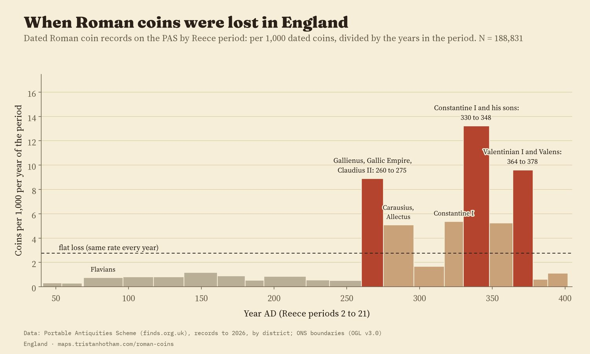
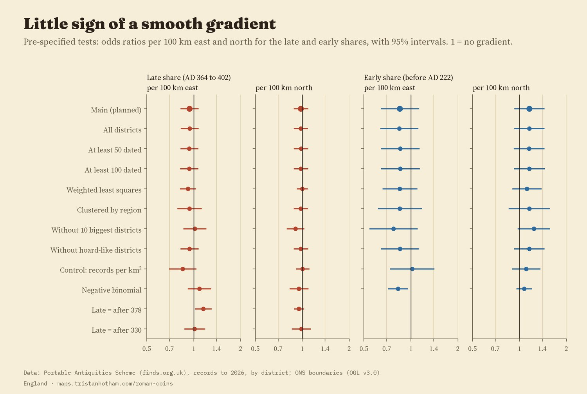
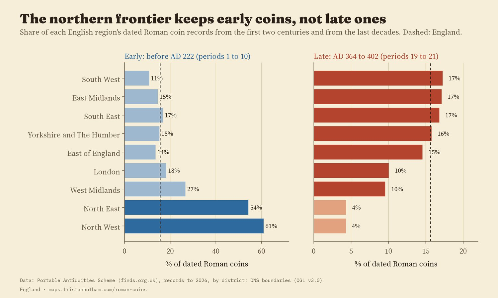
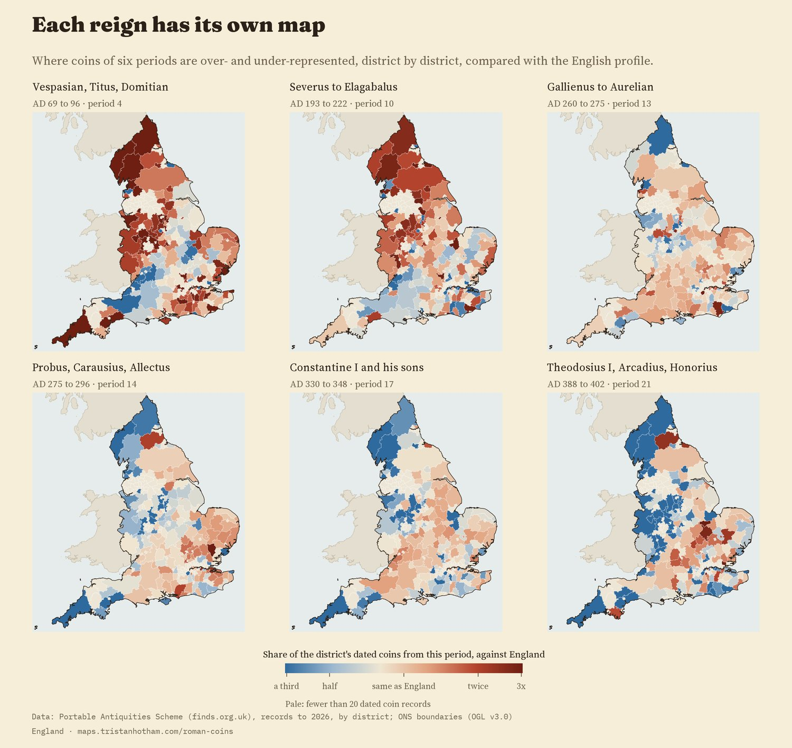
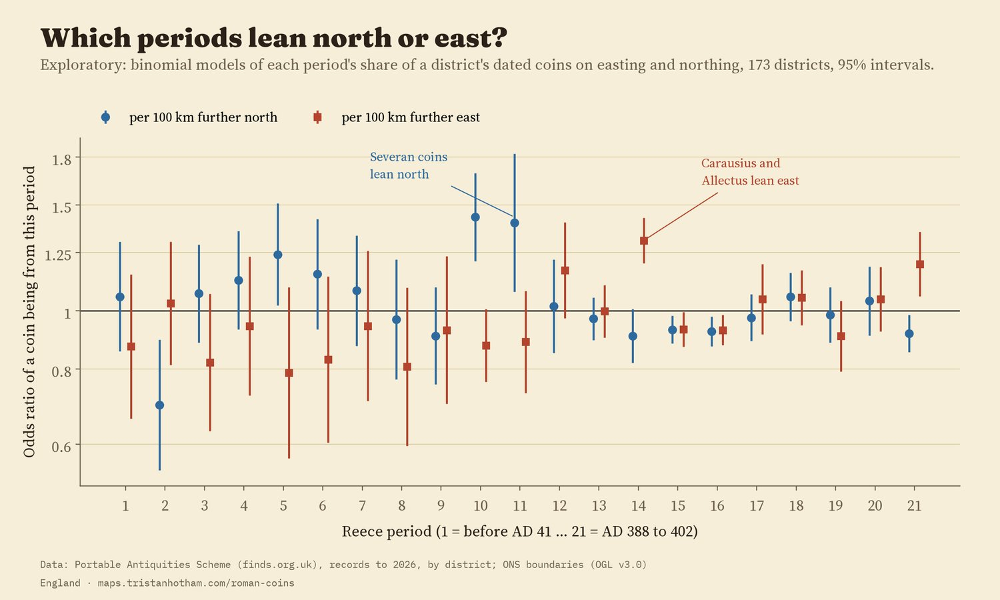
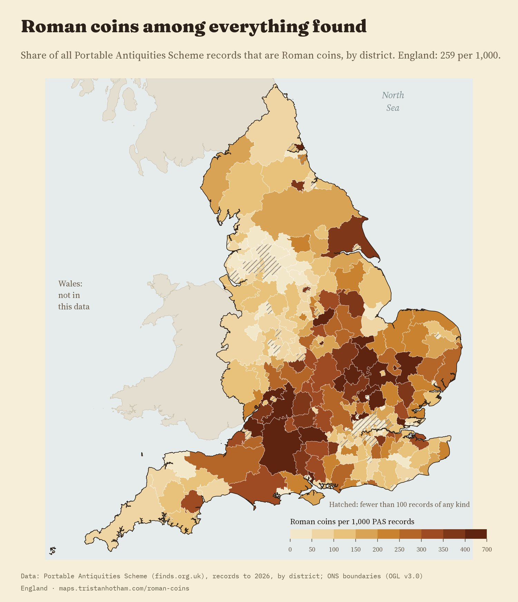
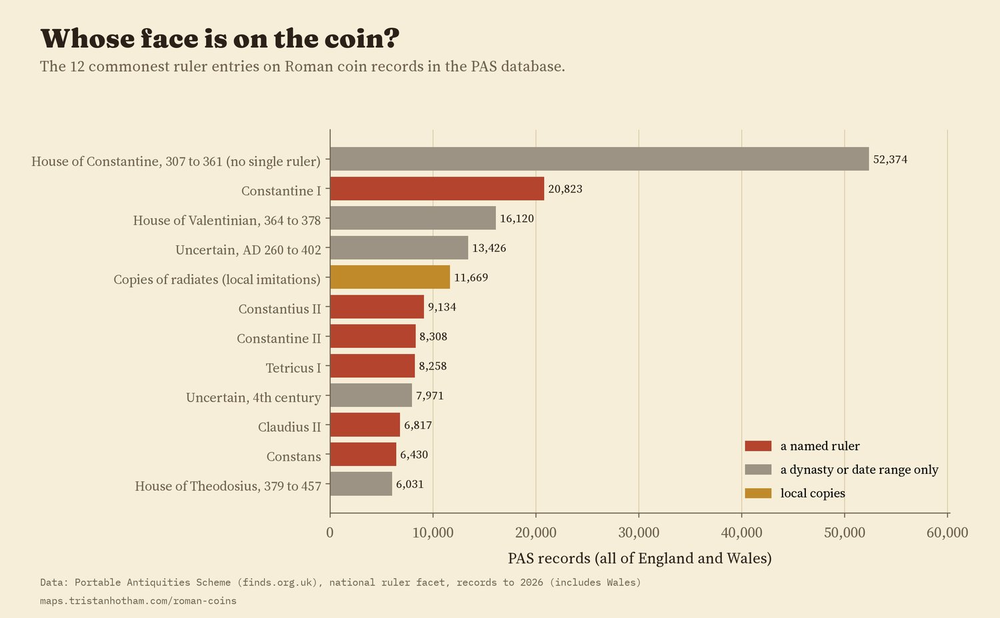

Roman coins found in England and recorded with the Portable Antiquities Scheme, district by district: 275,206 coin records among 1,062,032 finds of every period. Drag the slider or press Play to step through Reece's 21 coin periods, from before AD 41 to AD 402. Tap a district for its profile.
Every Roman coin found in an English field was lost, dropped, thrown away or hidden by somebody, and most of them were small change. Over the last quarter of a century, detectorists and others have shown hundreds of thousands of them to the Portable Antiquities Scheme, which records each one with the name of the emperor, the date and the district where it was found. I used those records to ask two old questions with new numbers: when were Roman coins lost in England, and did that rhythm differ from place to place?
Archaeologists split Roman coinage into 21 periods, devised by the numismatist Richard Reece, from the coins before AD 41 to the last issues that reached Britain around AD 402. Of the 188,831 coin records in England that can be placed in one of them, only about one in six (16%) belongs to the first two centuries. If coins had been lost at an even pace, every year would hold 2.8 of every 1,000. In AD 330 to 348, under Constantine and his sons, the rate is 13.2. The next highest are AD 364 to 378, under Valentinian and Valens (9.6), and AD 260 to 275, the age of the Gallic emperors and their debased silver (8.9). From AD 260 onwards come 82% of all dated coins. This is the shape Reece described for British sites in 1995, now seen in finds from across the English countryside.

Per 1,000 dated coins, divided by the years in each period.
The dip after AD 378 is real too: AD 378 to 388 holds only 6 of every 1,000 dated coins, less than a twentieth of the Constantinian peak per year. It suggests that little new small change reached Britain in those years.
Many books describe late Roman Britain as a country of two halves: a rich, coin-using south and east, and a north and west where the army sat and coin use thinned out sooner. Before computing anything by district, I wrote down a test of that idea: the share of late coins (AD 364 to 402) should rise steadily towards the east and fall towards the north, and the share of early coins (before AD 222) should do the opposite.
The smooth version of that idea fails. Across 173 districts with at least 20 dated coins, the late share barely moves with distance east (an odds ratio of 0.94 per 100 km, 95% interval 0.83 to 1.06) or north (0.98, 0.89 to 1.08). The early share is no clearer. All but one of the 20 planned checks on the late share agree; the exception counts only coins after AD 378, which lean slightly east.

The planned tests and their checks. A value of 1 means no gradient.
What the map shows instead is a step. In the North East and the North West, only 4.3% of dated coins are late, against 15.9% in the rest of England, and 58% are early, against 15%. The South West, the furthest west of all, has the highest late share of any region (17.2%). This step was not my planned test, so I treat it as a description, not a finding I set out to prove. It fits the older idea of a military north better than a simple tilt from east to west.

English regions. Dashed lines: England as a whole.
Use the slider on the map to step through the periods. The Flavian and Severan coins crowd into the north and the Pennines, where the army was. The coins of AD 275 to 296, the years of Probus and of Carausius and Allectus, the breakaway emperors of Britain, lean east. The very last coins, of Theodosius, Arcadius and Honorius, gather in a band from the Thames valley to the Wash and are scarce in the north west.

Each district's share of dated coins from the period, against England's share.
The same pattern turns up when I let every period have its own gradient: the odds that a dated coin is from AD 193 to 222 rise by a factor of 1.43 per 100 km further north, and the odds for AD 275 to 296 by 1.31 per 100 km further east. These are exploratory, added after the planned tests.

Exploratory: north and east gradients for each of Reece's 21 periods.
Raw counts mostly show where people go detecting and where they report what they find. So the map's first view divides the Roman coins in each district by every record of any period found there. In England, 259 of every 1,000 records are Roman coins. In the South West region it is 328; in London 91; in the North West 112. Among districts with at least 500 records, the highest share is in Huntingdonshire (605 per 1,000).

Roman coins per 1,000 records of any kind.
Constantine I is the commonest named ruler in 36 of the 47 English counties. The exceptions are mostly in the north and west: Trajan in Cumbria, Cheshire, Shropshire and Lancashire, Severus Alexander in Durham, Antoninus Pius in Northumberland, Hadrian in Cornwall and Derbyshire. Constantius II leads in West Yorkshire, and in Staffordshire and Greater Manchester coins of the Roman Republic outnumber those of any single emperor.

National ruler entries on the PAS database.
The finds. The counts come from the Portable Antiquities Scheme's public search, retrieved in 2026: all records by district, Roman coin records by district and by Reece period, and the top rulers by county. Findspots are public only to district level, so the district is the smallest unit here. Counts are records, not coins: a record can hold more than one coin, and some hoards are recorded coin by coin.
The places. All 296 district names in the data match the Office for National Statistics' 2023 local authority districts exactly. The data cover England only. Welsh finds are recorded under a different county field and were not in the download.
The tests. I wrote the analysis plan before computing any district shares, and kept to it. The national profile was visible in the first look at the data, so I treat it as a replication. Models are binomial regressions of each district's share on its easting and northing, with uncertainty that allows for districts in the same county being alike.
What this cannot say. The scheme records what people choose to show it. Ploughed land is detected more than pasture, some areas have more detectorists or more recording staff, and late Roman coins are small and easy to miss. Dividing by all finds removes some of that, not all. These are patterns in the record, not proof of how many coins were lost.